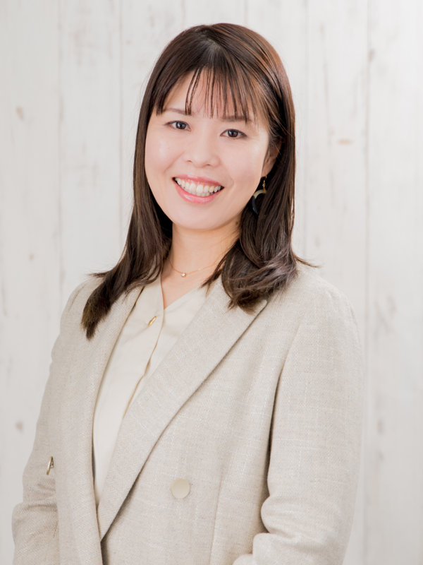
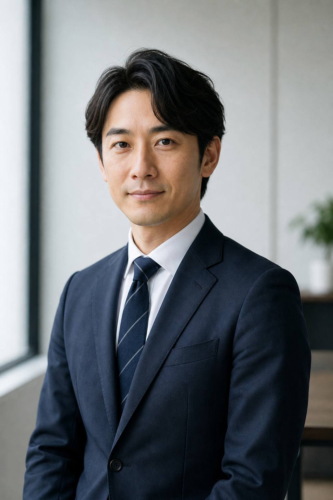

経営ポジションに特化した求人
CxO・経営幹部・事業責任者など、経営に近いポジションの求人だけを厳選してご紹介します。
CxO エージェント
経営者と、未来をつくる転職を。
現役の経営者が相談相手。キャリア相談から、
経営ポジションへの転職・参画までを一緒に描きます。
CxO・経営幹部・事業責任者など、経営に近い求人を厳選してご紹介します。
市場価値の整理から経営ポジションへの転職まで、現役の経営者が一緒に設計します。
経営者同士のつながりから、通常は出会えない経営の場・非公開求人へ。
年齢・業界よりも、「経営に近づく意志があるかどうか」を大切にしています。
実力は評価されている。それでも、社内で経営ポジションに上がるルートが描けない。
積み上げてきた力を、事業や経営の意思決定に近い場所で試したい。
独立や起業も選択肢にある。その前に、経営の現場を内側から知っておきたい。
CxO・経営幹部・事業責任者など「経営に近いポジション」への転職・参画を、現役の経営者が求人紹介から支援するサービスです。
求人を渡して終わりにはしません。いま自分の会社を経営している人間が、あなたのキャリアに正面から向き合います。
CxO・経営幹部・事業責任者など、経営に近いポジションの求人だけを厳選してご紹介します。

市場価値の整理から、経営ポジションへの転職プランまで、現役の経営者が一緒に描きます。

経営者同士のつながりから、通常の求人市場には出てこない非公開求人をご紹介します。
私たちが扱うのは「経営に近いポジション」の求人だけ。
CXO・経営幹部から、経営企画・コーポレート、事業責任者・新規事業まで。
あなたの相談相手は、いま実際に会社を経営している現役の経営者です。一人ひとりが、自らの経験をもとにキャリア相談に乗ります。

「新規事業から独立まで、いろんなキャリアの相談に乗ってきました。きれいな正解ではなく、回り道も含めて現場の目線で一緒に考えます。」
経歴味の素株式会社で量販店向けの法人営業・D2C新規事業開発に従事。独立系コンサルティングファームで大手事業会社の新規事業開発を支援後、株式会社プレイバッカーズを設立。

「国家資格を持つキャリアコンサルタント。父の会社を継いだ2代目代表でもあります。求人票では見えない“働くリアル”や、事業承継の悩みまで、まず安心して話せる相手でありたいと思っています。」
経歴大手企業で採用・労務・経理を経験後、新会社の立ち上げやIPO準備企業の管理部立ち上げを担当。国家資格キャリアコンサルタント。父の会社を継ぎ、2代目の代表として経営にも携わる。

「投資家・経営者として、多くの起業家やビジネスパーソンの相談に乗ってきました。戦略の話から「で、明日どう動くか」まで、具体に落とし込みながら伴走します。」
経歴医療・介護領域のSaaS企業 エス・エム・エスで事業戦略・企画・推進を経験。デロイト トーマツ コンサルティング、独立系イノベーションファームを経て現職。コンサル歴10年以上。早稲田大学卒。

「学生起業からExitまで、自分でリスクを取ってキャリアを切り拓いてきました。打算抜きで、あなたのこれからと本気で向き合います。」
経歴2018年、筑波大学在学中に株式会社LAETIA（現リライトキャピタル）を設立。上海でVTuber事務所を立ち上げ2020年に売却、toC向けアプリ事業を2022年に売却。2023年にM&A仲介事業を開始し、2024年11月にBeyondgeグループへ参画。

「20年以上の事業づくりと、8社の経営・出資の経験から。きれいごと抜きで、これからのキャリアと経営の話をします。」
経歴アクセンチュア、デロイト トーマツ コンサルティング、独立系ファームを経て20年以上戦略コンサルティングに従事。2022年にBeyondgeを創業。Senxeed Robotics（COO）、Pontely（CEO）、NEWONE（CSO）など8社のスタートアップに出資・成長支援。

「法人営業から広報、そして自分の会社の設立まで、いろいろなキャリアを歩いてきました。広報・ブランディングはもちろん、独立や新しい挑戦の相談も気軽にどうぞ。」
経歴近畿日本ツーリストでの法人旅行の企画営業、サーキュレーションでの企画職を経て、スタートアップでひとり広報として広報部門を立ち上げ。2023年に令和PRの立ち上げに参画し約10社の広報を支援。2024年に独立し、株式会社MICHIYUQを設立。同年よりBeyondgeで広報領域の企業支援を行う。
気になる募集があれば、まずは登録から。
無料無料で登録する※ 経営者から届いている“仲間募集”の一例（想定）です。求人票には出ない、経営に近いポジションを中心にご案内します。実際のご提案は面談のなかで個別に。
拡大フェーズのSaaS経営者が、代表直下で事業全体を任せられる相棒を募集。まずは業務委託から。
想定 1,500〜2,000万円
投資先の経営陣が、資金調達と管理体制づくりを一緒に進める仲間を募集。上場準備の中核。
想定 1,500〜2,500万円
新規事業を任せたい経営者が、P/L責任者として事業をつくる仲間を募集。経営会議メンバー。
想定 1,200〜1,800万円
経営トップが、全社戦略・M&A・IRを一緒に動かす右腕を募集。経営の意思決定に近い立場。
想定 1,300〜1,800万円
オーナー経営者が、後継者または右腕として経営を担う仲間を募集。腰を据えて事業を継ぐ。
想定 1,200〜2,000万円
スタートアップ経営者が、副業・業務委託から経営メンバーになる仲間を募集。スモールスタート可。
想定 1,000〜1,500万円＋SO
登録は1分。その後はあなたの希望に合わせて、2つのルートでご支援します。
 1
1氏名・メールアドレス・希望区分をご入力ください。あわせて、職歴の概要か履歴書・職務経歴書のご提出をお願いしています。
 2
2「正社員での転職」か「副業・顧問での参画」か。ご希望に合わせて進め方が分かれます。
 3
3現役経営者があなたの経歴・志向をヒアリングし、求人票に出ない経営ポジションを厳選してご案内します。
 4
4選考の調整から条件交渉、参画・入社後の立ち上がりまで、専任で伴走します。
現役経営者でもある専任コンサルタントとのキャリア面談を設定。市場価値の整理からキャリア設計まで、じっくり伴走します。
マッチする案件が出たタイミングで、メールでお届けします。気になる案件があれば、そこから面談へ進みます。
※ プライバシーに配慮し、氏名はイニシャル・企業名は非公開で掲載しています。年収・ポジションは一部仮の値です（確定後に差し替え）。
 ※画像はイメージです
※画像はイメージですT.さん（30代）
大手メーカー／事業企画
年収 約750万円
スタートアップ CEO
年収 約1,400万円＋SO
「事業企画として数字は作れても、最後に『決める』のはいつも自分ではない。そのもどかしさをずっと抱えていました。相談相手が現役の経営者だったので、足りない経験と自分の強みを正直に整理してもらえて、求人票には出てこないCEOのポジションに出会えました。いまは事業全体の意思決定に責任を持つ立場。怖さもありますが、毎日が自分の選択で前に進んでいく感覚が、何より楽しいです。」
 ※画像はイメージです
※画像はイメージですH.さん（30代）
コンサルティングファーム／コンサルタント
年収 約950万円
コンサル事業責任者（執行役員クラス）
年収 約1,300万円
「コンサルとして案件は回せても、『自分の事業』と言えるものがない。その物足りなさが転機でした。経営者の視点でキャリアを棚卸ししてもらい、一案件の担当から、事業のP/Lを預かる責任者へ。数字に責任を持つ重さはありますが、組織と一緒に事業が伸びていく手応えは前職では味わえなかったもの。あのとき思いきって相談してよかったと感じています。」
 ※画像はイメージです
※画像はイメージですN.さん（30代）
事業会社／事業推進
年収 約700万円
スタートアップ CEO
年収 約1,200万円＋SO
「安定した会社で事業推進をしていましたが、『このまま挑戦せずに終わるのか』という焦りがありました。相手が現役の経営者だったからこそ、起業のリアルや失敗の話まで本音で聞けたのが大きかった。いまはゼロから事業を立ち上げるCEO。不確実さの中にいますが、自分で未来を決められる今のほうが、ずっと納得して働けています。」

※画像はイメージですS.さん（30代）
金融機関／法人営業
年収 約850万円
投資会社 パートナー
年収 約1,600万円
「金融機関で法人営業をしながら、『お金を貸す側』ではなく『一緒に経営に踏み込む側』に行きたいと感じていました。これまで培った目利きを活かせる場を経営者と一緒に描き、投資会社のパートナーへ。案件の入口から経営に関わるいまは、責任もリターンも大きい。あのとき相談してみて、本当によかったと思っています。」
応募でも選考でもありません。まずは登録から。